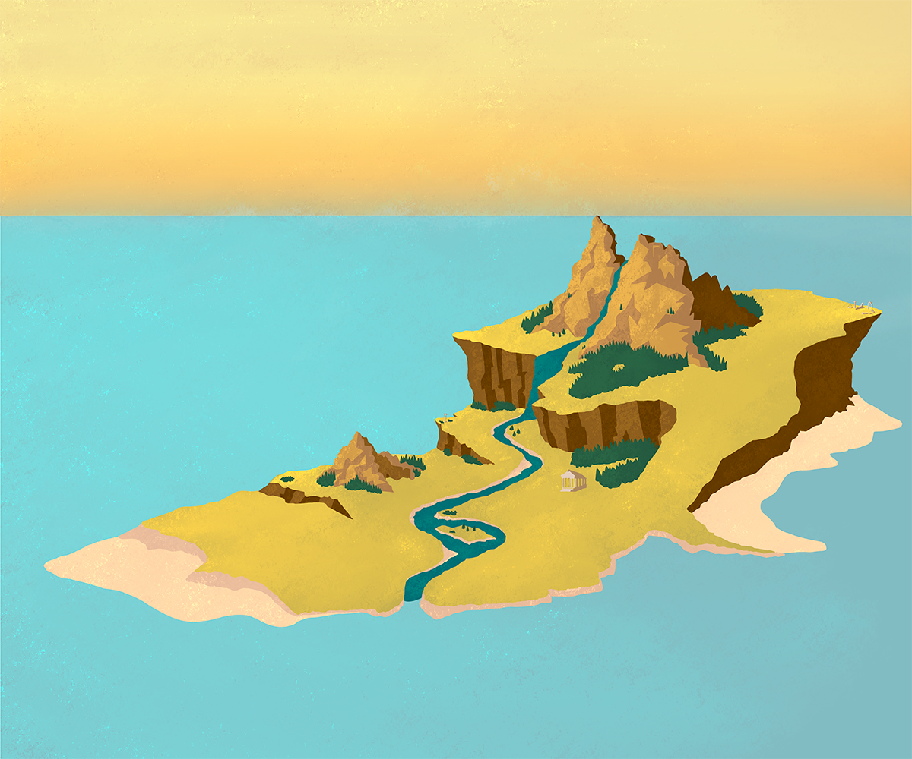

Illustrations
THE WITCH OF AIAIA (Concept Art)
This is some concept art I created for my videogame proposal to the DADIU program. The artwork shows the prison island of the goddess Circe. Here, she explores and unravels its mysteries, crafts potions and casts enchantments to protect her nymphs. To unbound herself from her prison, she shall face 3 divine trials from Helios, Oceanos and Hecate which help her unlock the power of the island and her own. At the end, the player chooses how Circe gets her freedom: leave Aiaia for good, claim it as her own untouchable domain, or destroy it entirely along herself, defying the gods.
Computer Graphics
Generated trees by L-Systems


These trees were generated using L-systems, a grammar-based method for modeling recursive structures. I first explored the parameters in Python to produce natural-looking growth, then imported the structure into Blender, where I built the final scene using geometry nodes and shaders.
As part of my Computer Graphics course at DTU, I created this interactive scene using WebGL and JavaScript. The goal was to simulate a reflective surface and have a teapot dynamically animate in and out of it, with lighting and shadows computed in real-time using shaders. Feel free to experiment with the buttons!
This interactive sphere was also part of my Computer Graphics course at DTU. You can toggle its orbit and dynamically adjust the number of triangle faces that define its geometry. A texture resembling Earth was added to make the model more visually engaging.
Other Projects
Cool ThingBonus project :)
I created this website from scratch using HTML, CSS, and some WebGL and shader integration. It's not just my site, it's my own design and development showcase!
I must admit, this is the first actual website I code from scratch so there is still lots of room for improvement. Nevertheless, I am proud of my creation and what I was able to learn on my own in 4-5 days.